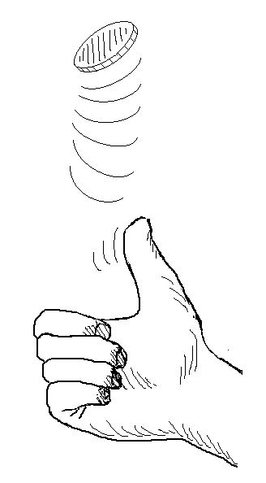

Please wait, while our marmots are preparing the hot chocolate…
====[title-slide][*no-status][image-full]
*
*
=Overview=[overview]
* Coin flipping
* Graphical models (bayesian networks)
* Linear regression
* …
=http://coffee.herokuapp.com☕=[image-full][bottom-right][darkened][*black-bg]
=Coin Flipping=
// what outcome −−− a few −−− what outcome −−− indep −−− prior −−− fairness

=Some Probability Rules, Measure Theory=
@svg: floatrightbr,aa media/potato-xandy.svg 245px 135px
@svg: floatrightbr,bb media/potato-xsumy.svg 245px 285px
* Product rule[prod]
** $p(X, Y) = p(X|Y) \, p(Y)$ = $p(Y|X) \, p(X)$
* Marginalization, Sum rule[sum]
** $p(X) = \sum_{Y \in \mathcal{Y}} p(X,Y)$
** $p(X) = \int_{Y \in \mathcal{Y}} p(X,Y)$
* Bayes rule[bayes]
** $p(Y|X) = \frac{p(X|Y) \, p(Y)}{p(X)}$
** $p(X) = \sum_{Y\in \mathcal{Y}} p(X|Y) \, p(Y)$[denom]
@anim-appear:800: .aa + .prod | .bb + .sum | .app | .bayes | .denom
=Coin Flipping Revisited=
* Modeling the coin[slide]
** $p(X=heads) = q$
** $p(X=tails) = 1-q$
* Independence assumption (given $q$)[slide]
=Bayesian Networks: DAGs=
@svg: floatrightbr media/bn-1.svg 300px 300px
* Bayesian Networks:
Directed Acyclic Graphs
** oriented edges
** no loops (directed cycles)
** concepts: “parents” and “children”
*** $X_3$ is a child of $X_1$ and $X_2$
*** $X_3$ is a parent of $X_5$
*** $X_1$ and $X_2$ have no parent
* Represents a decomposition of $p(X_{1..6})$
** $p(X_{1..6}) = p(X_1) p(X_2) p(X_3|X_1, X_2) p(X_4|X_2) p(X_5|X_3, X_4) p(X_6|X_4)$
** less parameters due to indep. assumption, binary example:
** $2^6 - 1$ for the full distribution
** $1 + 1 + 1\cdot 2\cdot 2 + 1 \cdot 2 + 1 \cdot 2\cdot 2 + 1 \cdot 2$ with above factorization
=Coin Flipping Revisited=
@svg: floatrightbr,aa media/bn-coin.svg 245px 200px
* Modeling the coin
** $p(X=heads | q) = q$
** $p(X=tails | q) = 1-q$
* Independence assumption (given $q$)[multi]
** $p(X_{1..N} | q) = \prod_{i=1..N} p(X_i |q)$
* Graphical model[multi]
@svg: floatleft,multi media/bn-coins.svg 245px 200px
@svg: floatleft,also media/bn-coins-plate.svg 245px 200px
@anim-appear:800: .multi | .also
=Coin Flipping Revisited=
* Finding $q$: what is its probability given the observations we have?
** $p(q | X_{1..N}) = ?$
* we had[clearboth][inc4]
** $p(X_{1..N})$, independent of $q$, ignored here for finding $q$
** $p( X_{1..N} | q)$, the probability of getting the outcome, with $q$ given
** $p(q)$ is a prior on the value of $q$
*** probably a fair coin? surely a fair coin?
*** maybe slightly unfair? maybe highly unfair?
*** ...
@anim-appear:300: .inc4
=Coin Flipping Revisited (recap)=
* What is the probability of $q$ given the observation we have?
** $p(q | X_{1..N}) \propto \prod_{i=1..N} p(X_i |q) \;p(q)$
* Probabilistic approach[clearboth][inc1]
** suppose a model of how data are generated: $\prod_{i=1..N} p(X_i |q)$
** we have data and looking for the parameters, we want $p(q | X_{1..N})$
** “reverse” the equation using Bayes rules[inc2]
** maybe, maximize $p(q | X_{1..N})$ (if you want the best solution)[inc3]
** always appears: a prior on the parameters: $p(q)$[inc4]
@anim-appear:300: .inc1 |.inc2 |.inc3 |.inc4
=Coin Flipping: back to our case=
// the original question was:
* We got _______, what's the probability for next throw?
** $p(X_{N+1} | X_{1..N}) = .... $
* [comment]
** $ = \int_{q}p(X_{N+1} | q) p(q|X_{1..N})$ «- write it in two steps (independence)
** write concrete values for the p(x|q)
** introduce the beta distribution: $Beta(\alpha, \beta)(q) = \frac{x^{\alpha-1}(1-x)^{\beta-1}}{B(\alpha,\beta)}$, $E[Beta(\alpha, \beta) = \frac{\alpha}{\alpha+\beta}]$
** start talking about conjugate prior
** todo: beta conjugate prior, give intuitive virtual observations
* Back, with our prior on $q$[slide]
** $p(q | X_{1..N}) = Beta(\alpha + ..., \beta + ...)(q)$
** $p(X_{N+1} | X_{1..N}) = $
// todo: posterior predictive
// todo: take the max and get the formula
// todo: with uninformative prior
// todo: with heavy prior
==Enough With Money==
=Gaussian/Normal Distribution: basics=
@svg: floatrightbr,fullabs media/normal-distribution-stddev.svg 800px 500px
=Gaussian/Normal Distribution: basics=
@svg: floatrightbr media/normal-distribution-stddev.svg 200px 200px
* Normal Distribution or Gaussian Distribution[bb]
** $N(x|\mu,\sigma^2) = \frac{1}{\sqrt{2\pi \sigma^2}} exp(-\frac{(x-\mu)^2}{2 \sigma^2})$
** Is-a probability density[bbb]
** $\int_{-\infty}^{+\infty} N(x|\mu,\sigma^2) dx = 1$[bbb]
** $N(x|\mu,\sigma^2) > 0$[bbb]
* Parameters[cc]
** $\mu$: mean, $E[X] = \mu$
** $\sigma^2$: variance, $E[(X -E[X])^2 ] = \sigma^2$
@anim-appear:800: .bb |.bbb |.cc
=Multivariate Normal Distribution=
* D-dimensional space: $x = \{x_1, ..., x_D\}$
* Probability distribution[slide]
** $N(x|\mu,\Sigma) = \frac{1}{\sqrt{(2\pi)^D \|\Sigma\|}}\; exp(-\frac{(x-\mu)^T\Sigma^{-1}(x-\mu)}{2})$
** $\Sigma$: covariance matrix
@svg: floatleft media/multivariate-normal.svg 800px 250px
=Linear Regression=
* $y = w^T x$
// todo: write and draw normal least square (in a corner)
// todo: forget about it and say y=ax+b but actually y is noisy ynoise with normal(0, signoise)
// todo: ynoise_i = y_i + eps_i with eps_i drawn from gaussian
// todo: so ynoise|x,a,b drawn from N(ax+b, signoise)
// todo: likelihood(a,b)
// todo: log
// todo: same as least square (tada!)
// todo: but no prior on a,b... dirty
// todo: let's see what a L2 regularisation gives => gaussian prior on a,b with lambda weight...
=Playing with ax+b prior=
* live demo
=Questions? Comments?=[image-fit][bottom-left][darkened][deck-status-fake-end]
←
→
/ − will be replaced by author − will be replaced by the title